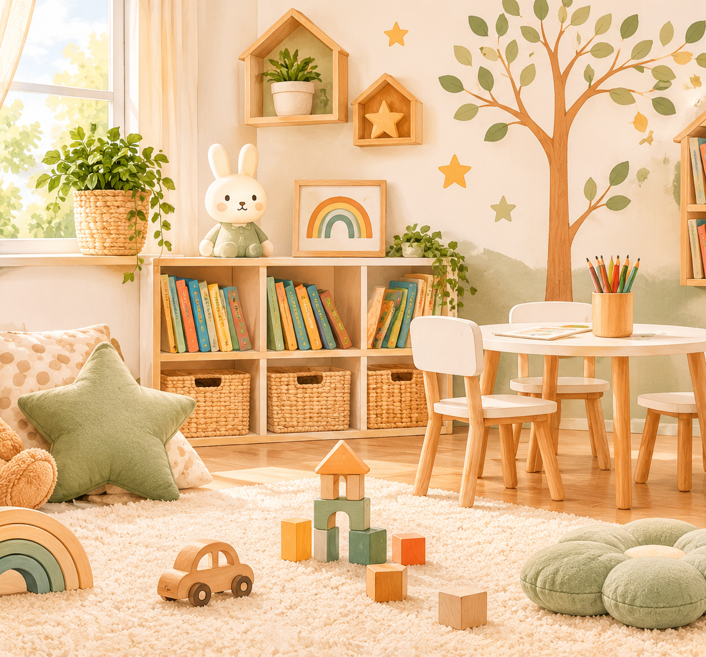
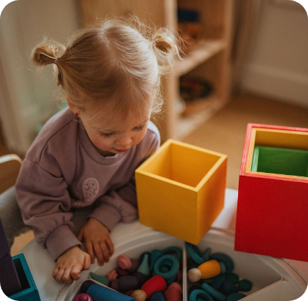

Profil & Agrément
- Zaineb HERBAG, 32 ans.
- Assistante maternelle agréée pour l’accueil de 2 enfants.
- Formation initiale d’assistante maternelle validée.
- Formation SST (Sauveteur Secouriste du Travail) à jour.
Livret d’accueil personnalisé • 4, parvis du Breuil, 92160 Antony
Je suis Zaineb HERBAG, assistante maternelle agréée pour 2 enfants à Antony. Ce projet d’accueil vous présente mon cadre de vie, mes valeurs éducatives et l’organisation pensée pour offrir à votre enfant sécurité affective, autonomie et sérénité.

01. Présentation & Accueil
Établir ensemble des repères clairs fondés sur la confiance, l’écoute mutuelle et le respect du rythme individuel de chaque enfant.
02. Sécurité affective & Pédagogies
Mon rôle est de répondre aux besoins fondamentaux de l’enfant — physiologiques, de sécurité, d’appartenance, d’estime de soi et d’accomplissement — pour qu’il explore le monde sereinement.
Chez le jeune enfant, la sphère émotionnelle prime sur la logique. Construire un lien d’attachement fiable est la base de tout apprentissage.
Être un repère stable, chaleureux et rassurant face aux joies comme aux frustrations du quotidien.
Proposer un environnement et des activités adaptés à l’âge et au rythme de l’enfant, le laisser faire par lui-même, l’encourager et féliciter ses réussites.
Respecter le développement moteur naturel de l’enfant : ne jamais forcer une posture, le laisser découvrir son corps librement sur un grand tapis sécurisé.
Apprendre par l’exploration sensorielle et artistique : peinture, matières naturelles, découvertes tactiles et expression libre de l’imagination.
03. Espaces d’accueil
Chaque zone de la maison a une fonction claire et sécurisée afin que l’enfant se repère facilement. Cliquez sur une photo pour l’agrandir.
Grand tapis bébé sécurisé, armoire à hauteur d’enfant (livres, poupées, peluches), dînette, coin calme avec coussins et table d’activités manuelles.
Tapis à langer sécurisé avec panier dédié : chaque enfant dispose de ses propres serviettes, couches et produits de soin séparés.
Lit à barreaux pour les plus petits (< 6 mois) et lit couchette Wesco pour les plus grands, dans une chambre maintenue entre 18 °C et 22 °C.
04. Vigilance au quotidien
Des protocoles rigoureux et vérifiés chaque jour pour préserver la santé et la sécurité des tout-petits.
05. Rythme & Éveil
Des repères réguliers qui rassurent l’enfant tout en respectant ses besoins de sommeil, de jeu et de découverte.
Accueil individualisé et transmissions avec les parents, petite comptine du matin, jeux libres et sortie (parc, RPE, médiathèque) ou activité manuelle.
Repas convivial adapté à l’âge, lavage des mains, change, soins d’hygiène et retour progressif au calme.
Lecture d’une histoire avant le coucher pour nourrir le langage et l’imaginaire, puis sieste respectant le rythme de chacun et réveil en douceur.
Goûter équilibré, jeux libres ou calmes en attendant les parents, et transmission orale du soir.
Jeux sensoriels (5 sens), moteurs (coordination), symboliques (imitation) et premiers jeux de règles. Chaque semaine inclut une activité manuelle (peinture, dessin, gommettes, pâte à modeler/sel, sable magique, cuisine, enfilage).

Mobiles visuels, hochets légers, doudou et coussins sensoriels pour éveiller en douceur la vue, l’ouïe et le toucher.
Jouets à mordiller adaptés et tapis d’éveil sécurisé pour observer, attraper et découvrir son corps en toute liberté.
Jeux de cache-cache, balles sensorielles et cubes gigognes pour accompagner le quatre-pattes et la permanence de l’objet.
Chariots de marche, pyramides d’anneaux, jouets à tirer ou pousser, pinces de motricité fine et bacs sensoriels.
Encastrements (boîte à formes), cubes à empiler, pâte à modeler / pâte à sel, premiers puzzles et découverte du miroir.
Parcours moteurs (cabane, tunnel, piscine à balles), transvasements sensoriels, jeux de construction, habillage et dînette.
Jeux d’imitation (soins aux poupées, petit ménage), déguisements, parcours sautés en extérieur et puzzles simples.
Un accueil inscrit dans le réseau local de la petite enfance :
06. Familiarisation & Partenariat
Le cerveau du jeune enfant a besoin de répétition (au moins 3 fois dans les mêmes conditions) pour anticiper, prendre ses repères et se sentir en sécurité affective.
| Étape | Organisation | Objectif pour l’enfant |
|---|---|---|
| Semaine 1 | Rencontres rapprochées avec la présence rassurante du parent, découverte des lieux et des jeux (sans séparation). | Découvrir le nouvel environnement en toute confiance et créer un premier lien. |
| Début Semaine 2 | Temps de jeux, repas et premiers temps de séparation progressive et courte. | Prendre ses repères et apprivoiser doucement la séparation puis les retrouvailles. |
| Fin Semaine 2 | Temps d’accueil sans le parent et premières siestes, ajustés au rythme de votre enfant. | Consolider les repères et installer un sentiment durable de sécurité. |
07. Contact & Rencontre
Vous recherchez un accueil chaleureux, sécurisant et respectueux du rythme de votre enfant à Antony ? N’hésitez pas à me contacter pour échanger sur vos besoins et convenir d’une première rencontre.